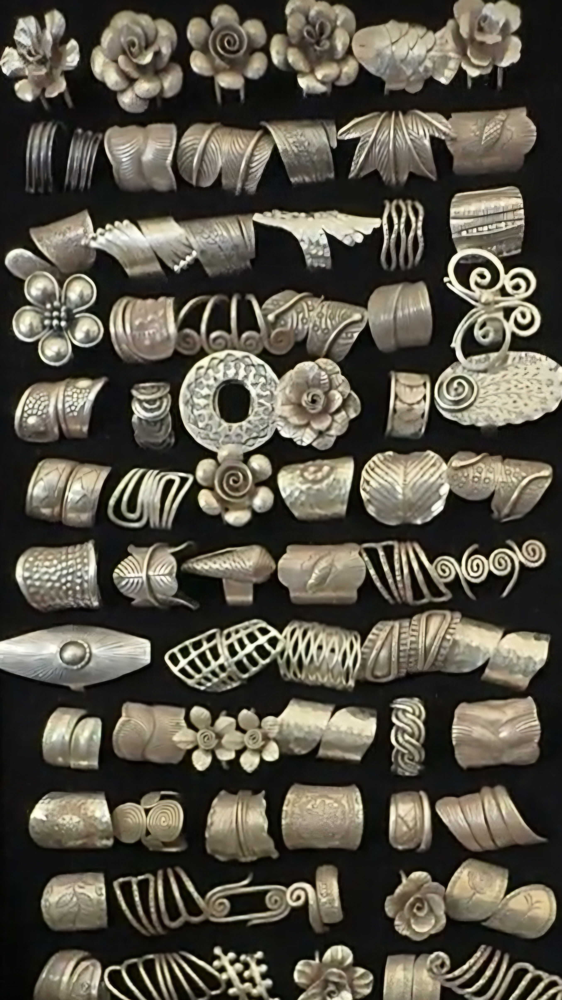
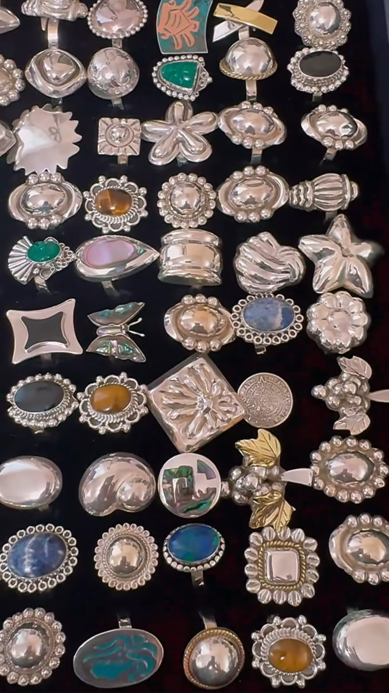
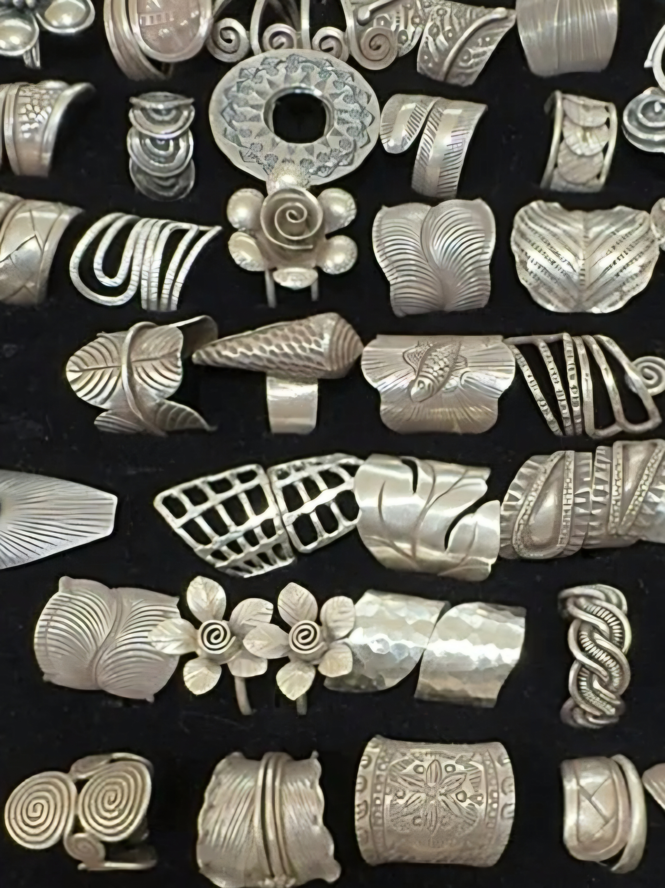
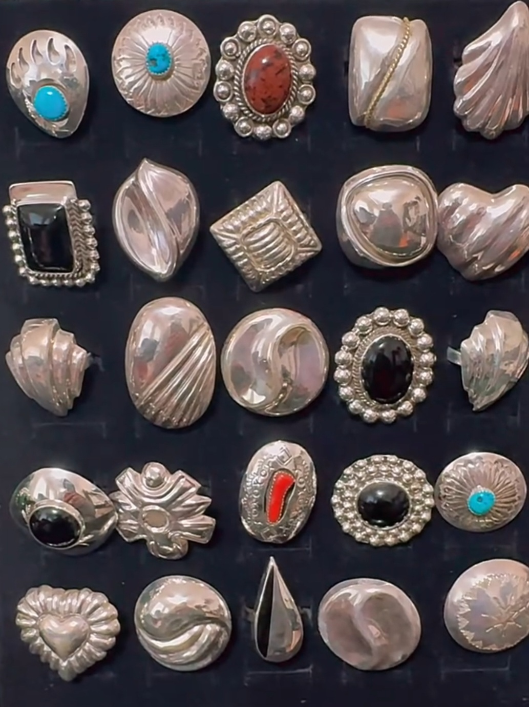
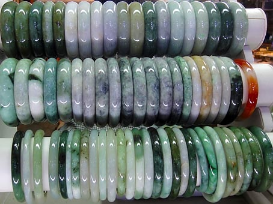
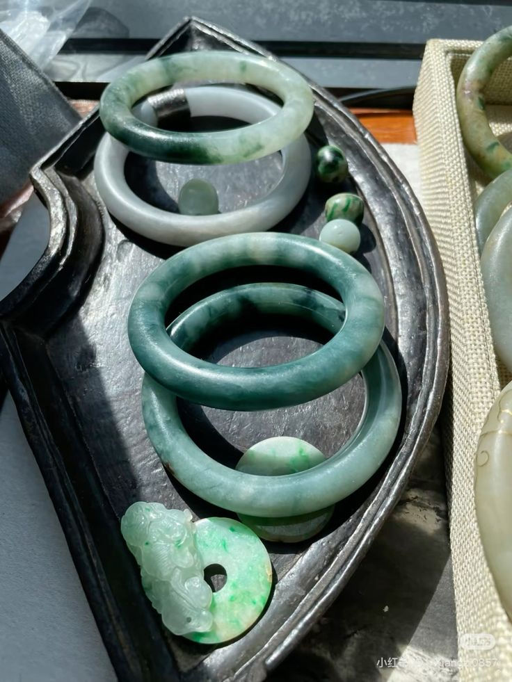
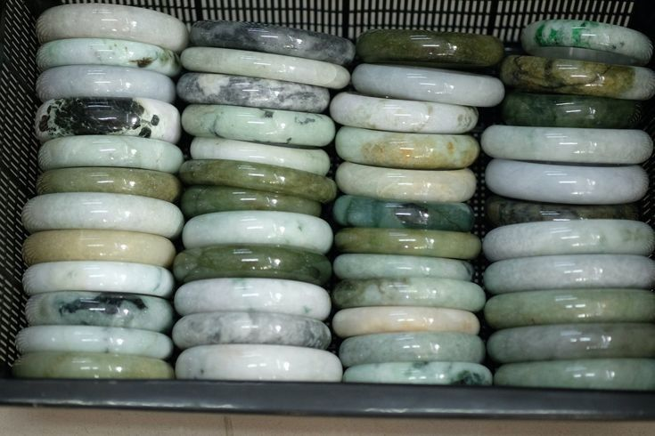

───୨ৎJewelry Intro─
Jewelry is a staple in my day-to-day life. It’s not just decorative — it’s cultural, personal, and comforting. I wear amulets made of jade, gold, silver, and other meaningful materials that stay with me throughout the day. I love mixing metals and textures, although I tend to keep my deeper yellow golds on their own; if the gold is a softer yellow I’ll often pair it with silver.
If you were to see me in person, you’d probably find my jade bangle on my wrist — it’s one of those pieces that feels like part of me. For privacy reasons I won’t be showing my full collection here, but I’m happy to share the ideas, care tips, and inspiration behind the pieces I choose.
───୨ৎVintage Jewelry & Pre-Loved Finds─
Vintage and pre-loved jewelry holds a special place in my collection. There’s something magical about owning pieces that lived a life before you — items with stories, craftsmanship, and character you rarely find in modern mass-produced designs. Buying pre-loved is also sustainable and often more budget-friendly: you can discover unique shapes, engravings, and motifs that feel one-of-a-kind.
I love the subtle patina, the tiny marks of wear, and the traces of old techniques — they make each piece feel intimate and intentional.
───୨ৎMaterials, Meaning & Symbolism─
I choose jewelry not only for beauty but for meaning. Jade, for example, is grounding and tied to protection and family tradition. Gold feels warm and bold; silver reads clean and reflective. Mixed metals give me playful flexibility, though I still consider tone and balance.
I also enjoy pieces made of stone, enamel, ceramic, and glass — when materials carry meaning, they become more than accessories; they become part of your identity.
───୨ৎEveryday Staples─
Even as I rotate my collection, a few staples almost never leave my rotation: a jade bangle, one good chain, an amulet, and a couple of rings. I like a mix of sentimental pieces and durable basics — items that are comfortable to wear, resilient enough for daily life, and meaningful enough that I feel incomplete without them.
───୨ৎJewelry-Inspired Ideas (Pearls, Chains, Repurposing)─
If you don’t want to attach valuable jewelry to bags or belongings (totally understandable), you can echo jewelry aesthetics safely. Pearls are a huge inspiration: a single or double pearl strand made with high-quality glass pearls or scratch-resistant coated beads gives the same elevated look without risk.
Repurpose bracelet beads into bag charms or zipper pulls, turn spare pendants into dangles, or use costume findings to mimic the look of precious metals. These small swaps preserve the vibe while keeping your real pieces safe.
───୨ৎCare & Storage─
Jewelry lasts longer with care. I advise looking up the care instructions for any pieces you own. Generally, I stick to this simple routine:
- Store metals and precious stones separately to avoid scratches.
- Wipe pieces before storing and keep them in cloth pouches or designated jewelry boxes.
- Don't use harsh chemicals to clean jewelry.
───୨ৎCultural Jewelry & Tradition─
Jewelry is closely tied to culture for me — wearing jade or certain amulets is more than a style choice; it’s a connection to heritage, family, and tradition. These pieces carry quiet histories and keep me grounded in everyday life.
───୨ৎPersonal Belongings─
Here are some of my own photos from one of my favorite sellers!




───୨ৎMore Pics─


